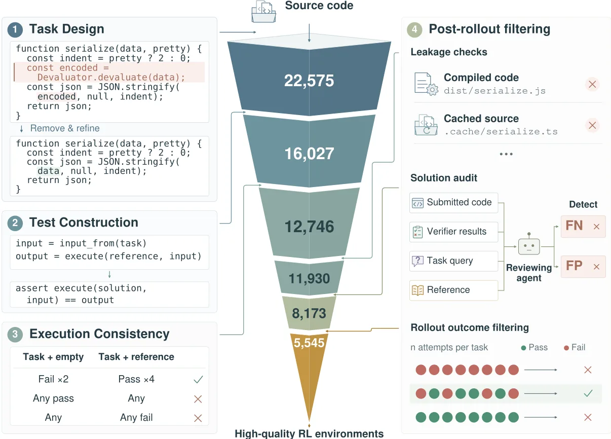
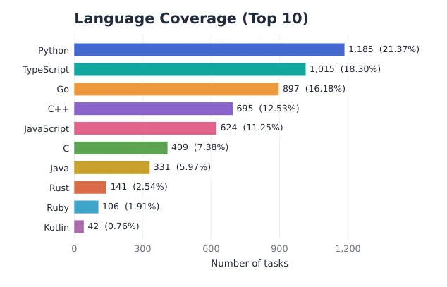
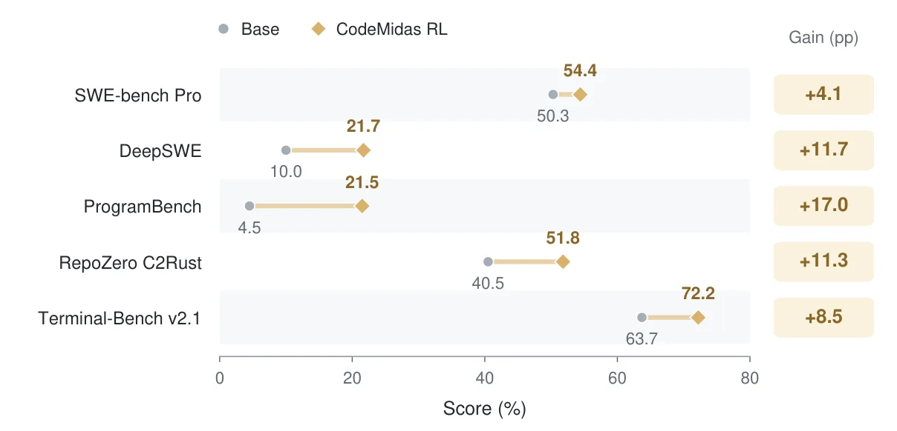
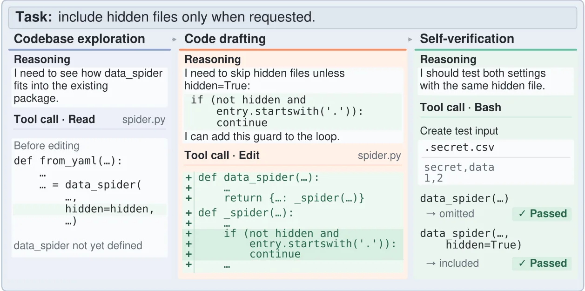

O problema: de onde vêm as tarefas de treino para agentes de código?
Treinar agentes de programação com reinforcement learning exige dois ingredientes: tarefas diversas e verificadores confiáveis. A diversidade ajuda o modelo a generalizar; os verificadores garantem que o agente receba recompensa apenas quando resolve o problema de verdade. Até agora, a maioria dos pipelines extrai essas tarefas de artefatos de desenvolvimento: issues do GitHub, pull requests, commits ou testes já escritos. O problema é que essa abordagem limita a quantidade e a variedade de tarefas ao que foi explicitamente documentado ou testado.
Repositórios open-source contêm milhares de funções e classes implementadas, mas nem todas têm uma issue associada ou um teste unitário. Se você pudesse olhar para uma função pronta e perguntar 'o que ela faz?', poderia transformar essa funcionalidade em uma tarefa de treino: remova a implementação, descreva o comportamento esperado, construa testes e peça ao agente para reescrevê-la. A ideia é simples, mas executá-la de forma confiável é difícil.
O CodeMidas, desenvolvido por uma equipe da Xiaomi, Peking University e University of Hong Kong, faz exatamente isso. O pipeline recebe código-fonte como única entrada específica da tarefa e produz ambientes executáveis de RL: enunciado, ambiente de desenvolvimento containerizado e testes automáticos. O resultado é um dataset de 5.545 tarefas de treino extraídas de 3.185 repositórios, cobrindo 23 linguagens de programação e 15 domínios técnicos.

A ideia: usar código implementado como referência e ponto de partida
A intuição central é que código já implementado carrega informação suficiente para gerar uma tarefa de treino. A interface pública de uma função ou classe define o que ela deve fazer; executar o código original fornece exemplos de comportamento esperado; e o repositório ao redor pode ser adaptado em um ambiente de desenvolvimento que preserva estrutura e dependências reais.
Mas transformar isso em tarefa de RL exige cuidado. O enunciado precisa descrever o comportamento observável sem revelar detalhes de implementação. Os testes precisam aceitar soluções corretas alternativas, não apenas a implementação original. E o ambiente precisa ser executável de forma isolada, sem depender de serviços externos ou configurações específicas de máquina.
O CodeMidas resolve esses desafios com um pipeline agêntico: modelos de linguagem exploram o código, formulam especificações comportamentais, constroem testes baseados em execução do código original e validam os ambientes através de múltiplos rollouts de solução. Cada etapa usa compute agêntico para tomar decisões que seriam difíceis de codificar em regras fixas.
Como funciona: quatro módulos de construção e filtragem
O pipeline começa com 22.575 candidatos a tarefa extraídos de repositórios open-source. O primeiro módulo, task design, identifica funcionalidades implementadas, formula enunciados comportamentais e adapta o repositório em um ponto de partida onde a funcionalidade-alvo ainda precisa ser implementada. Agentes exploram o código para entender o que a função faz, quais são suas entradas e saídas, e como ela se encaixa no resto do sistema.
O segundo módulo, test construction, constrói testes informados pela execução do código original. O pipeline executa a implementação de referência com entradas geradas, captura as saídas e usa esses pares entrada-saída para construir asserções. Isso garante que os testes reflitam o comportamento real, não uma interpretação equivocada do enunciado.
O terceiro módulo, execution consistency, prepara o ambiente e verifica consistência. Cada tarefa é testada em duas configurações: com a implementação removida (deve falhar) e com a implementação original (deve passar). Se a tarefa não falha quando vazia ou não passa com o código original, ela é descartada. Esse filtro elimina testes frágeis, dependências quebradas e especificações ambíguas.
O quarto módulo, post-rollout filtering, usa rollouts de agentes para detectar problemas que só aparecem em uso. Rollouts adversariais procuram vazamento: soluções que passam nos testes sem implementar a funcionalidade, explorando brechas como código compilado ou cache. Solution audits revisam vereditos do verificador: um agente revisor compara a solução submetida, os resultados dos testes e o enunciado da tarefa para detectar falsos positivos e falsos negativos. Por fim, rollout outcome filtering mantém apenas tarefas onde alguns rollouts passam e outros falham, garantindo que a tarefa não é nem trivial nem impossível.
O dataset: 5.545 tarefas em 23 linguagens e 15 domínios
O dataset final contém 5.545 tarefas de treino extraídas de 3.185 repositórios open-source. As tarefas cobrem 23 linguagens de programação, com Python (1.676 tarefas, 30,2%), TypeScript (1.419, 25,6%) e Go (1.032, 18,6%) sendo as mais representadas. As dez linguagens mais frequentes cobrem 98,2% do dataset.
As tarefas também se distribuem por 15 domínios técnicos: web development, data processing, CLI tools, APIs, testing utilities, entre outros. Cada tarefa consiste em um enunciado, um ambiente de desenvolvimento containerizado e um conjunto de testes executáveis. O ambiente preserva a estrutura real do repositório, incluindo arquivos de configuração, dependências e organização de diretórios.
Os autores verificaram que o conjunto de treino é disjunto de todos os benchmarks de avaliação usados no paper: SWE-bench Pro, DeepSWE, ProgramBench, RepoZero C2Rust e Terminal-Bench v2.1. Eles também separaram 200 tarefas do CodeMidas como conjunto de validação (CodeMidas Val), usado para acompanhar a dinâmica de aprendizado durante o treino.

Treinamento: GRPO com recompensas de execução binária
Os autores treinaram o MiMo-V2.5, um modelo da Xiaomi, nas 5.545 tarefas do CodeMidas usando GRPO (Group Relative Policy Optimization), um algoritmo de reinforcement learning. A recompensa é binária: +1 se a solução passa em todos os testes, 0 caso contrário. Não há reward model aprendido nem verificador neural; a recompensa vem diretamente da execução dos testes.
O treino usou batch size 32 e 32 rollouts por tarefa. Cada rollout consiste em uma tentativa completa do agente de resolver a tarefa: ler o enunciado, explorar o repositório, escrever código, executar testes e iterar até submeter uma solução final. O agente tem acesso a ferramentas de navegação de código, edição de arquivos e execução de comandos no terminal.
Os autores avaliaram o modelo inicial (antes do RL) e checkpoints intermediários em cinco benchmarks externos e no CodeMidas Val. Todos os benchmarks usam configurações oficiais e conjuntos de tarefas públicos. Para ProgramBench, eles reportam Almost Solved (porcentagem de tarefas que passam em pelo menos 95% dos testes); para os outros, reportam pass rate (porcentagem de tarefas resolvidas completamente).
Resultados: melhorias em todos os cinco benchmarks
Treinar no CodeMidas melhorou a performance do MiMo-V2.5 em todos os cinco benchmarks externos. No DeepSWE v1.1, um benchmark de reparo de issues reais, a pass rate subiu de 10,0% para 21,7%, um ganho de 11,7 pontos percentuais. No ProgramBench, que mede construção de programas completos a partir de especificações, o Almost Solved score subiu de 4,5% para 21,5%, um ganho de 17 pontos.
No Terminal-Bench v2.1, que avalia trabalho em terminal (navegação, execução de comandos, scripts), a pass rate subiu de 63,7% para 72,2%, um ganho de 8,5 pontos. No SWE-bench Pro, a pass rate subiu de 50,3% para 54,4% (+4,1 pontos). No RepoZero C2Rust, que mede tradução de código C para Rust, a pass rate subiu de 40,5% para 51,8% (+11,3 pontos).
Esses ganhos cobrem tipos diversos de trabalho de software: reparo de repositórios, tradução de código, construção de programas completos e trabalho em terminal. Isso sugere que tarefas derivadas de funcionalidades implementadas ajudam o agente a generalizar para contextos variados, não apenas para tarefas similares às de treino.

Dinâmica de aprendizado: pass rate sobe junto com comprimento das trajetórias
No CodeMidas Val, a pass rate subiu de 35,0% (modelo inicial) para 44,7% durante o treino, um ganho de cerca de 10 pontos percentuais. A curva de aprendizado mostra que o ganho se estabiliza após o step 40, mantendo-se consistentemente acima da baseline.
Junto com a melhoria na pass rate, o comprimento médio das trajetórias aumentou de cerca de 100 mil tokens para mais de 200 mil tokens. Isso indica que o agente está usando mais do orçamento de interação disponível: explorando mais arquivos, executando mais comandos e iterando mais vezes antes de submeter a solução final.
Esse padrão sugere que o RL não está apenas ensinando o agente a acertar respostas memorizadas, mas a adotar comportamentos mais exploratórios e iterativos. Os autores investigaram isso em mais detalhe através de análise de trajetórias.
Análise: escala e qualidade das tarefas importam
Para entender o impacto da escala e da qualidade das tarefas, os autores treinaram modelos em subconjuntos do dataset. Eles compararam três configurações de alta qualidade (1k, 3k e 5k tarefas, todas passando pelos quatro módulos de filtragem) com uma configuração vanilla de 8k tarefas (amostradas antes da filtragem e limpeza).
Os resultados mostram que aumentar o número de tarefas de alta qualidade melhora a performance: 1k < 3k < 5k. Mais importante, o conjunto de 5k tarefas filtradas supera o conjunto de 8k tarefas vanilla, mesmo sendo menor. Isso confirma que a filtragem agressiva do CodeMidas não apenas remove ruído, mas melhora a eficiência do treino.
A análise também mostra que a qualidade das tarefas importa mais do que a quantidade bruta. Tarefas com testes inconsistentes, vazamento ou verificadores incorretos prejudicam o aprendizado, mesmo quando o dataset é maior.
Mudanças de comportamento: mais exploração e mais auto-verificação
Os autores analisaram como o comportamento do agente muda durante o treino, examinando trajetórias no CodeMidas Val. Eles mediram dois aspectos: exploração do repositório (quantos arquivos únicos o agente lê) e auto-verificação (quantas vezes o agente escreve e executa seus próprios testes antes de submeter a solução).
Após o treino com RL, o agente explora mais arquivos do repositório: a mediana de arquivos únicos lidos por tarefa aumenta. Isso sugere que o agente aprendeu a buscar contexto relevante no código existente, em vez de tentar resolver a tarefa apenas com base no enunciado.
O agente também realiza mais auto-verificação: escreve e executa testes próprios com mais frequência. Mais importante, trajetórias que incluem auto-verificação têm taxa de sucesso significativamente maior do que trajetórias sem auto-verificação. Isso indica que o comportamento de testar a própria solução antes de submetê-la está associado a melhores resultados.
Os autores verificaram que essas mudanças de comportamento também aparecem em tarefas externas, não apenas no CodeMidas Val. Isso sugere que o agente generalizou os comportamentos aprendidos — exploração e auto-verificação — para contextos novos.

Limitações e o que o paper não mostra
O CodeMidas tem limitações importantes. Primeiro, o pipeline depende de código executável: se o repositório não compila ou tem dependências quebradas, a tarefa é descartada. Isso exclui código legado, projetos abandonados e repositórios com configurações complexas. A taxa de retenção de 24,5% (5.545 de 22.575 candidatos) mostra que a maioria dos candidatos não sobrevive aos filtros.
Segundo, o paper não compara o CodeMidas diretamente com outros métodos de construção de ambientes de RL. Não sabemos se o ganho vem da escala (5.545 tarefas), da diversidade (23 linguagens, 15 domínios) ou da qualidade dos verificadores. Experimentos ablation mostram que qualidade importa, mas não isolam os efeitos de cada módulo de filtragem.
Terceiro, o treino usa apenas o MiMo-V2.5. Não sabemos se os ganhos se replicam com outros modelos base ou se o CodeMidas favorece arquiteturas ou tamanhos específicos. Os autores também não reportam custo computacional do pipeline de construção nem do treino de RL.
Quarto, os benchmarks de avaliação são todos em inglês e focados em repositórios open-source. Não sabemos se o método funciona para código proprietário, documentação em outras línguas ou domínios técnicos não representados no dataset de treino. A cobertura de 23 linguagens é ampla, mas Python, TypeScript e Go dominam (74% das tarefas).
Por fim, o paper não discute falhas qualitativas. Não sabemos quais tipos de tarefa o agente ainda erra sistematicamente, nem se há padrões nos erros que sobrevivem aos filtros. Exemplos de tarefas descartadas e análise de por que foram descartadas ajudariam a entender os limites do método.
Por que isso importa
O CodeMidas mostra que código-fonte implementado pode ser transformado em ambientes de treino de RL em escala, sem depender de issues, commits ou testes pré-existentes. Isso abre uma fonte muito maior de tarefas de treino: milhões de repositórios open-source contêm funcionalidades implementadas que podem ser convertidas em exercícios de programação.
A abordagem também é mais geral do que métodos baseados em artefatos de desenvolvimento. Issues e pull requests descrevem mudanças; o CodeMidas descreve funcionalidades completas. Isso permite treinar agentes em tarefas de construção, não apenas de reparo ou modificação.
Os resultados sugerem que diversidade de tarefas ajuda: treinar em 23 linguagens e 15 domínios melhora performance em benchmarks variados. Isso é consistente com a intuição de que agentes de código precisam de exposição ampla para generalizar, não apenas de muitos exemplos de um tipo específico de tarefa.
A análise de trajetórias mostra que RL muda comportamentos, não apenas acurácia. O agente aprende a explorar mais e a se auto-verificar, e esses comportamentos estão associados a maior sucesso. Isso sugere que métricas de processo — o que o agente faz durante a resolução — podem ser tão importantes quanto métricas de resultado.
O método tem limitações claras: requer código executável, descarta a maioria dos candidatos e ainda não foi testado em larga escala com outros modelos. Mas demonstra uma direção promissora para escalar dados de treino de RL a partir de código existente, complementando abordagens baseadas em artefatos de desenvolvimento.
O que fica
- CodeMidas constrói 5.545 tarefas de RL a partir de código implementado, sem depender de issues ou commits, cobrindo 23 linguagens e 15 domínios técnicos.
- Treinar MiMo-V2.5 nessas tarefas melhora performance em cinco benchmarks: +11,7% no DeepSWE, +17% no ProgramBench e +8,5% no Terminal-Bench v2.1.
- Filtragem agressiva importa: 5.545 tarefas de alta qualidade superam 8 mil tarefas não filtradas, mostrando que qualidade vence quantidade bruta.
- Análise de trajetórias revela que o agente aprende a explorar mais o repositório e a se auto-verificar, comportamentos associados a maior taxa de sucesso.
Paper original: CodeMidas: Scaling Agentic Coding RL Environments from Code Itself
Comentários
Nenhum comentário ainda. Seja o primeiro.